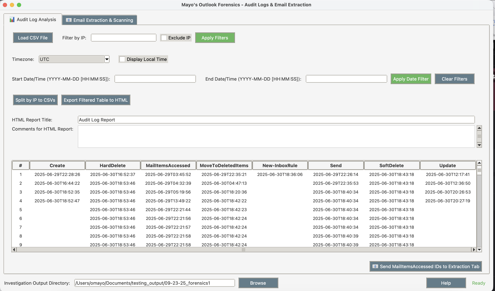
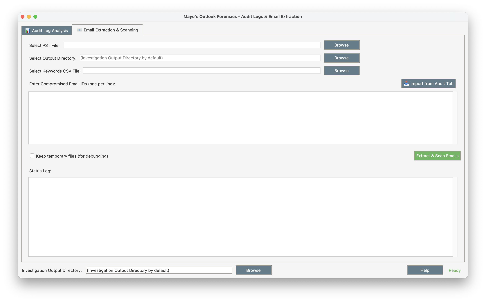

Welcome to Outlook Forensics Tool
What This Tool Does For You
If you're investigating a potential email breach, this tool helps you:
- Find the smoking gun - Load Microsoft Purview audit logs and quickly spot suspicious email access patterns
- Get the actual compromised emails - Extract specific emails from PST files based on the audit trail
- Scan for sensitive data - Automatically search through emails and attachments for keywords like "password", "SSN", etc.
- Create interactable reports - Generate HTML reports you can actually share with management or law enforcement
Bottom line: You go from "we think someone accessed emails" to "here are the exact 47 emails they viewed, and 12 of them contained sensitive customer data."
What the Application Looks Like
Here's what you'll see when you run the tool - a clean, professional interface designed for forensic investigations:
Audit Log Analysis Tab

Load and analyze Microsoft Purview audit logs with filtering and export capabilities.
Email Extraction Tab

Extract specific emails from PST files and scan for sensitive keywords.
What You'll Actually Get
When you're done with an investigation, you'll have:
Sortable HTML Reports
Interactive reports showing exactly when suspicious access happened
Individual Email Files
Each compromised message exported in .eml format for detailed analysis
Keyword Summaries
Complete breakdown of what sensitive keywords were found and where
Interactive Documentation
Professional reports suitable for incident reports and legal proceedings
Two Tools in One
This combines two separate investigation workflows:
Tab 1: Audit Log Analysis
- Load those massive CSV files from Microsoft Purview
- Filter out the noise to focus on actual suspicious activity
- Export clean, readable reports instead of spreadsheet hell
Tab 2: Email Extraction
- Pull specific emails from PST files using the IDs you found in the audit logs
- Scan through email content and attachments for sensitive data
- Generate keyword match reports
The tabs talk to each other - you can send email IDs directly from the audit analysis to the extraction tool.
Installation Guide
Platform Compatibility
Works best on Mac, okay on Linux. Windows is... complicated.
Download Files
Mac Setup (Easiest)
# Download/clone this repo, then:
cd outlook_forensics
chmod +x setup_mac.sh
./setup_mac.sh
# When it's done:
source venv/bin/activate
python forensics_app.py
Linux Setup
cd AuditApp
chmod +x setup_linux.sh
./setup_linux.sh
source forensics_app_env/bin/activate
python forensics_app.py
If the Setup Scripts Break
Sometimes they do. Here's the manual way:
Install System Dependencies
# Mac
brew install libpst tesseract
# Linux
sudo apt-get install pst-utils tesseract-ocr
Set Up Python Environment
# Create virtual environment
python3 -m venv forensics_app_env
source forensics_app_env/bin/activate
# Install Python dependencies
pip install -r requirements.txt
Common Installation Issues
- "readpst command not found" - The setup script failed to install libpst
- Permission errors - Make sure to run setup scripts with proper permissions
- Python version conflicts - Use Python 3.7+ for best compatibility
How to Use This Tool
Step 1: Start with the Audit Logs
- Get your Microsoft Purview audit log CSV file
- Purview → Audit → Search → Activities - friendly names → select everything under "Exchange mailbox activities"
- Load it in the first tab
- (Optional) Set your timezone so timestamps make sense
- Filter by suspicious IP addresses or date ranges
- Export to HTML to see what you're dealing with
- Refine the filters to filter out as much "friendly" activity as possible
Step 2: Get the Compromised Email IDs
- Click "Send MailItemsAccessed IDs to Extraction Tab"
- This finds all the email Message-IDs that were accessed suspiciously
- They automatically get loaded into the second tab
- (Optional) "HardDelete", "Send", and other message ID's can also be extracted from the HTML from "Digested Information" tab
Step 3: Extract and Scan the Actual Emails
- Switch to the Email Extraction tab
- Browse for affected PST file (usually huge)
- Pick an output folder
- Load a keywords file (one keyword per line - "password", "ssn", etc.)
- Feel free to add your own, or remove any keywords
- Click "Import from Audit Tab" to load those email IDs
- Hit "Extract & Scan Emails" and wait
Step 4: Check Your Results
The HTML reports are what you actually want to look at. They're sortable and you can send them to people who need to understand what happened.
What Files You'll Get
From Audit Log Analysis:
- HTML report with sortable timeline of suspicious access
- CSV files split by IP address (if you want them)
- Filtered data exports
From Email Extraction:
- Individual .eml files for each compromised email
- Folders with extracted attachments
- CSV summary showing which emails had sensitive keywords
- HTML report with keyword match details
File Types It Can Scan
- Emails: Regular email body text (plain and HTML)
- Attachments: PDF, Word docs, Excel sheets, images (needs OCR), text files
Important Security Notes
This tool processes potentially sensitive breach data:
- Only run it on secure, trusted computers
- Don't leave extracted emails sitting around afterward
- Be careful who you share the HTML reports with
- Follow your organization's data handling policies
- Consider encrypting the output folder
Performance Tips
- Large PST files: Extract to a local drive, not network storage
- Lots of keywords: Start with a few specific ones first
- Memory issues: Close other apps, especially browsers with lots of tabs
- Network drives: Copy PST files locally before processing
Sample Reports
Here are examples of the HTML reports generated by the tool. These demonstrate the kind of interactive analysis you'll get from your investigations. All sensitive and personally identifiable information has been removed.
What You're Looking At
Audit Log Analysis: Shows timeline of suspicious email access activities, filterable by IP address, date, and activity type.
Email Keyword Scan: Displays emails and attachments that contained sensitive information, with detailed keyword match counts.
Both reports are fully interactive - you can sort, filter, and drill down into specific incidents for detailed analysis.